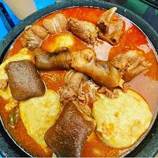

Fufu

Fufu is a staple, starchy dough from West Africa, particularly iconic in Ghana, made by pounding boiled cassava and unripe plantains (or cocoyam) into a smooth, elastic paste.
Ingredients
- Cassava
- Green plaintain
- Water
Steps
- Peel and wash cassava and plantain
- Remove fiber woody from middle of cassava chunks
- Place the cassava and plantain in a pot and conver with water then boil for sometime
- Drain the water